Gene-regulatory network of cardiomyocyte remodeling after myocardial infarction
Compiled: November 29, 2022
cardiomyocyte-GRN.RmdDuring this tutorial, we will integrate the snRNA-seq and snATAC-seq data generated from the human heart samples after myocardial infarction. The integrated data will be used as input for inferring gene regulatory network.
We first download the required data. In this case, we need two Seurat objects with each one corresponding to snRNA-seq and snATAC-seq respectively. The snRNA-seq object includes gene expression data of all fibroblasts and the snATAC-seq includes all chromatin accessibility profiles. Additionally, we also need a gene activity matrix for data integration. This matrix was estimated from the snATAC-seq data by using the ArchR package. The script of cleaning the data and preparing these objects is found here.
Run the following commands to download the data:
mkdir -p Cardiomyocyte
wget -q -P Cardiomyocyte https://costalab.ukaachen.de/open_data/scMEGA/Cardiomyocyte/snRNA.rds
wget -q -P Cardiomyocyte https://costalab.ukaachen.de/open_data/scMEGA/Cardiomyocyte/snATAC.rds
wget -q -P Cardiomyocyte https://costalab.ukaachen.de/open_data/scMEGA/Cardiomyocyte/gene.activity.rdsNext, we load all necessary packages:
suppressMessages(library(ArchR))
suppressMessages(library(Seurat))
suppressMessages(library(Signac))
suppressMessages(library(scMEGA))
suppressMessages(library(harmony))
suppressMessages(library(Nebulosa))
suppressMessages(library(BSgenome.Hsapiens.UCSC.hg38))
suppressMessages(library(ggplot2))
suppressMessages(library(dplyr))
suppressMessages(library(BSgenome.Hsapiens.UCSC.hg38))
suppressMessages(library(JASPAR2020))
suppressMessages(library(TFBSTools))
suppressMessages(library(igraph))
suppressMessages(library(ggraph))Data integration
Let’s load the data into memory and see how they look like
obj.rna <- readRDS("./Cardiomyocyte/snRNA.rds")
obj.atac <- readRDS("./Cardiomyocyte/snATAC.rds")
gene.activity <- readRDS("./Cardiomyocyte/gene.activity.rds")
obj.rna## An object of class Seurat
## 28933 features across 63161 samples within 1 assay
## Active assay: RNA (28933 features, 2000 variable features)
## 4 dimensional reductions calculated: pca, harmony, umap, umap_harmony
obj.atac## An object of class Seurat
## 182116 features across 19859 samples within 1 assay
## Active assay: ATAC (182116 features, 0 variable features)
## 3 dimensional reductions calculated: harmony, umap, umap_harmonyWe can observe that there are 45,515 and 6,481 cells in our snRNA-seq and snATAC-seq datasets. We now visualize the data as colored by patients. Note that here we used the UMAP embedding generated from batch-corrected low-dimensional space so that no batch effects are observed from the 2D visualization.
p1 <- DimPlot(obj.rna, pt.size = 1, reduction = "umap_harmony") +
ggtitle("snRNA-seq")
p2 <- DimPlot(obj.atac, pt.size = 1, reduction = "umap_harmony") +
ggtitle("snATAC-seq")
p1 + p2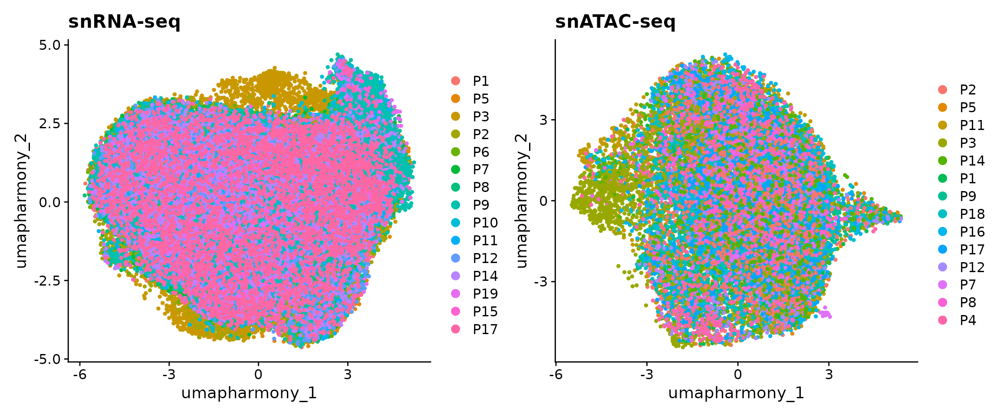
Co-embedding
First, we need to project the data into a common low-dimensional space. This is done by using the CCA method from Seurat. To this end, we have wrapped several functions from Seurat into a single function CoembedData.
obj.coembed <- CoembedData(
obj.rna,
obj.atac,
gene.activity,
weight.reduction = "harmony",
verbose = FALSE
)## Performing data integration using Seurat...## Warning in RunCCA.Seurat(object1 = reference, object2 = query, features =
## features, : Running CCA on different assays## Finding integration vectors## Finding integration vector weights## Transfering 19026 features onto reference data## Coemebdding the data...## Centering data matrix## Warning: The default method for RunUMAP has changed from calling Python UMAP via reticulate to the R-native UWOT using the cosine metric
## To use Python UMAP via reticulate, set umap.method to 'umap-learn' and metric to 'correlation'
## This message will be shown once per sessionWe next visualize the snRNA-seq and snATAC-seq in this shared UMAP space. The cells are colored by patients or modalities.
p1 <- DimPlot(obj.coembed, group.by = "patient", shuffle = TRUE, label = TRUE)
p2 <- DimPlot(obj.coembed, group.by = "tech", shuffle = TRUE, label = TRUE)
p1 + p2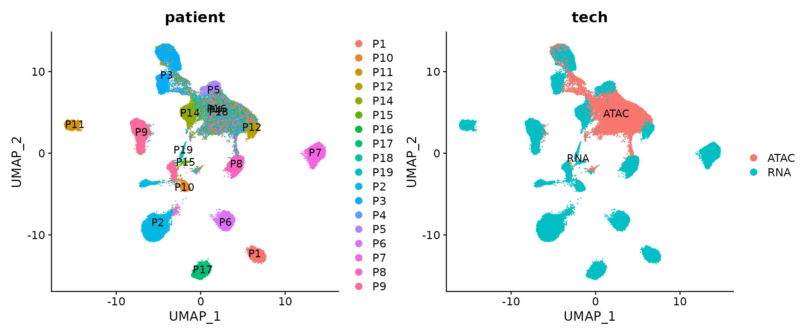
The batch effects between patients, regions and modalities are quite clear. So next we use Harmony to perform batch correction and generate a new UMAP embedding.
obj.coembed <- RunHarmony(
obj.coembed,
group.by.vars = c("patient", "region", "tech"),
reduction = "pca",
max.iter.harmony = 30,
dims.use = 1:30,
project.dim = FALSE,
plot_convergence = FALSE
)## Harmony 1/30## Harmony 2/30## Harmony 3/30## Harmony 4/30## Harmony 5/30## Harmony 6/30## Harmony 7/30## Harmony 8/30## Harmony 9/30## Harmony 10/30## Harmony 11/30## Harmony 12/30## Harmony 13/30## Harmony 14/30## Harmony 15/30## Harmony 16/30## Harmony 17/30## Harmony 18/30## Harmony 19/30## Harmony 20/30## Harmony 21/30## Harmony 22/30## Harmony 23/30## Harmony 24/30## Harmony 25/30## Harmony converged after 25 iterations
obj.coembed <- RunUMAP(
obj.coembed,
dims = 1:30,
reduction = 'harmony',
reduction.name = "umap_harmony",
reduction.ke = 'umapharmony_',
verbose = FALSE,
min.dist = 0.4
)We can plot the data again
p1 <-
DimPlot(obj.coembed, group.by = "patient", reduction = "umap_harmony")
p2 <-
DimPlot(obj.coembed, group.by = "tech", reduction = "umap_harmony")
p1 + p2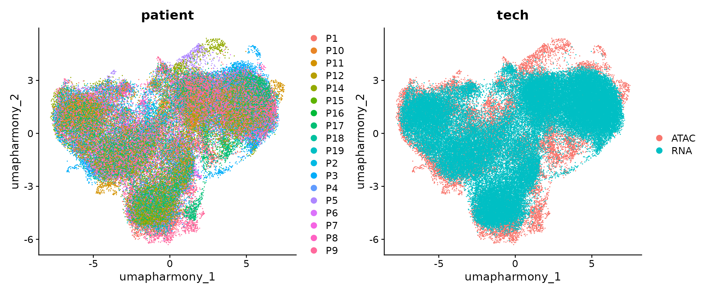
From the new UMAP embedding, we can observe that after batch-correction, cells from different patients, regions, and modalities are well mixed.
Sub-clustering
We next perform sub-clustering to identify different populations in our multi-omic fibroblast data. To further control the data quality, here we will use a two-round approach to remove low-quality cells. We first use a high-resolution to get a large amount of clusters.
obj.coembed <- FindNeighbors(obj.coembed, reduction = "harmony", dims = 1:30)## Computing nearest neighbor graph## Computing SNN
obj.coembed <- FindClusters(obj.coembed, resolution = 1, verbose = FALSE)
cols <- ArchR::paletteDiscrete(obj.coembed@meta.data[, "RNA_snn_res.1"])## Length of unique values greater than palette, interpolating..
p <- DimPlot(obj.coembed, group.by = "RNA_snn_res.1", label = TRUE,
reduction = "umap_harmony", shuffle = TRUE) +
scale_color_manual(values = cols) +
xlab("UMAP1") + ylab("UMAP2")
p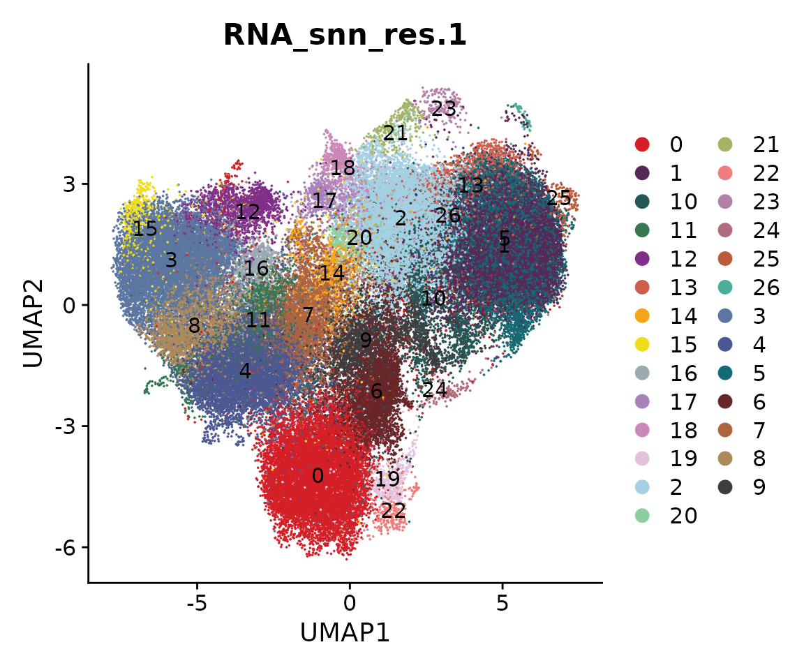
We can use the function CellPropPlot to visualize the cell propotion across all patients.
cols <- ArchR::paletteDiscrete(obj.coembed@meta.data[, "patient_region_id"])## Length of unique values greater than palette, interpolating..
p1 <- CellPropPlot(obj.coembed,
group.by = "patient_region_id",
prop.in = "RNA_snn_res.1",
cols = cols)
p2 <- CellPropPlot(obj.coembed,
group.by = "tech",
prop.in = "RNA_snn_res.1")
p1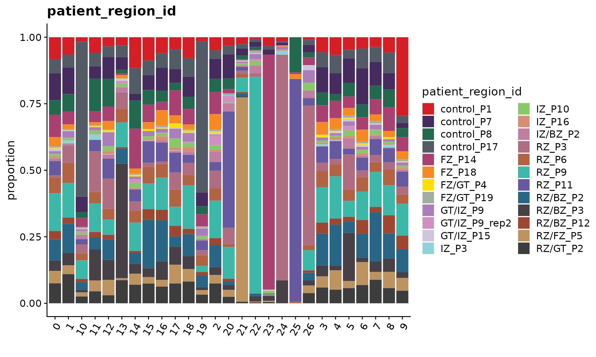
p2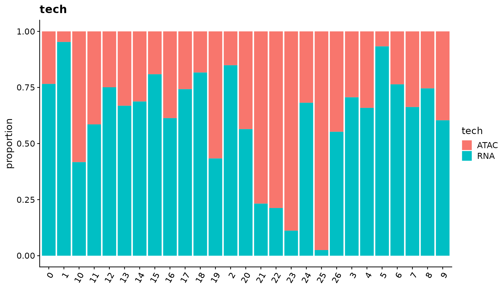
Next, we identify the markers for each cluster and visualize the top 3.
all.markers <- FindAllMarkers(obj.coembed,
only.pos = TRUE,
min.pct = 0.5, logfc.threshold = 0.5)## Calculating cluster 0## Calculating cluster 1## Calculating cluster 2## Calculating cluster 3## Calculating cluster 4## Calculating cluster 5## Calculating cluster 6## Calculating cluster 7## Warning in FindMarkers.default(object = data.use, slot = data.slot, counts =
## counts, : No features pass logfc.threshold threshold; returning empty data.frame## Calculating cluster 8## Calculating cluster 9## Calculating cluster 10## Warning in FindMarkers.default(object = data.use, slot = data.slot, counts =
## counts, : No features pass logfc.threshold threshold; returning empty data.frame## Calculating cluster 11## Calculating cluster 12## Calculating cluster 13## Calculating cluster 14## Calculating cluster 15## Calculating cluster 16## Calculating cluster 17## Calculating cluster 18## Calculating cluster 19## Calculating cluster 20## Warning in FindMarkers.default(object = data.use, slot = data.slot, counts =
## counts, : No features pass logfc.threshold threshold; returning empty data.frame## Calculating cluster 21## Warning in FindMarkers.default(object = data.use, slot = data.slot, counts =
## counts, : No features pass logfc.threshold threshold; returning empty data.frame## Calculating cluster 22## Calculating cluster 23## Calculating cluster 24## Calculating cluster 25## Calculating cluster 26
df <- all.markers %>%
group_by(cluster) %>%
slice_max(n = 3, order_by = avg_log2FC)
p <- DotPlot(obj.coembed, features = unique(df$gene)) + RotatedAxis()
print(p)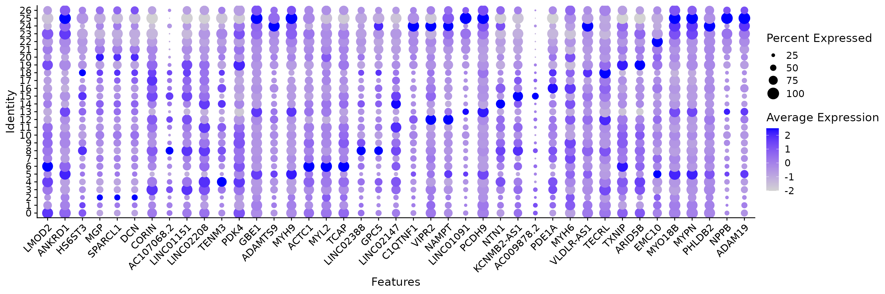
saveRDS(obj.coembed, "./Cardiomyocyte/coembed.rds")We remove the clusters that are either patient-specific or modality-specific.
Idents(obj.coembed) <- "RNA_snn_res.1"
coembed.sub <- subset(obj.coembed, idents = c(1, 2, 21, 22, 23, 24, 26), invert = TRUE)
coembed.sub## An object of class Seurat
## 230075 features across 60788 samples within 3 assays
## Active assay: RNA (28933 features, 2000 variable features)
## 2 other assays present: ATAC, GeneActivity
## 4 dimensional reductions calculated: pca, umap, harmony, umap_harmony
cols.clusters <- ArchR::paletteDiscrete(coembed.sub@meta.data[, "RNA_snn_res.1"])
options(repr.plot.height = 6, repr.plot.width = 6)
p <- DimPlot(coembed.sub, group.by = "RNA_snn_res.1", label = TRUE,
reduction = "umap_harmony", shuffle = TRUE, cols = cols.clusters) +
xlab("UMAP1") + ylab("UMAP2")
p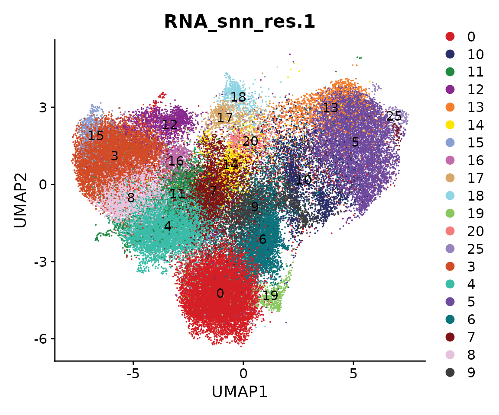
We then re-do the UMAP embedding and clustering with a lower resolution to reduce complexity.
coembed.sub <- RunUMAP(coembed.sub,
dims = 1:30,
reduction = 'harmony',
reduction.name = "umap_harmony",
reduction.key = 'umap_harmony_',
verbose = FALSE,
min.dist = 0.4)## Warning: Keys should be one or more alphanumeric characters followed by an
## underscore, setting key from umap_harmony_ to umapharmony_## Warning: All keys should be one or more alphanumeric characters followed by an
## underscore '_', setting key to umapharmony_
## re-clustering
coembed.sub <- FindNeighbors(coembed.sub, reduction = "harmony", dims = 1:30)## Computing nearest neighbor graph## Computing SNN
coembed.sub <- FindClusters(coembed.sub, resolution = 0.1, verbose = FALSE)
cols <- ArchR::paletteDiscrete(coembed.sub@meta.data[, "RNA_snn_res.0.1"])
p <- DimPlot(coembed.sub, group.by = "RNA_snn_res.0.1", label = TRUE,
reduction = "umap_harmony", shuffle = TRUE, cols = cols) +
xlab("UMAP1") + ylab("UMAP2")
p 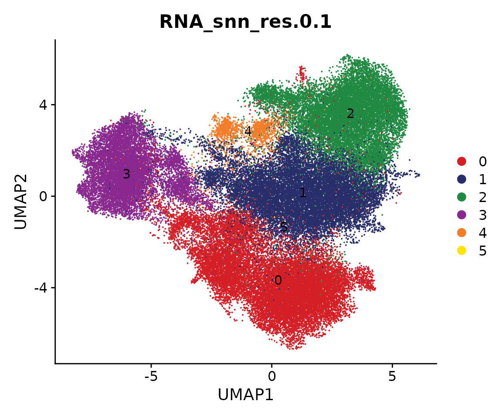
Marker genes are identified based on new clustering results and we can plot the top 10 markers.
all.markers <- FindAllMarkers(coembed.sub,
only.pos = TRUE,
min.pct = 0.25, logfc.threshold = 0.5)## Calculating cluster 0## Calculating cluster 1## Calculating cluster 2## Calculating cluster 3## Calculating cluster 4## Calculating cluster 5
df <- all.markers %>%
group_by(cluster) %>%
slice_max(n = 10, order_by = avg_log2FC)
p <- DotPlot(coembed.sub, features = unique(df$gene)) + RotatedAxis()
print(p)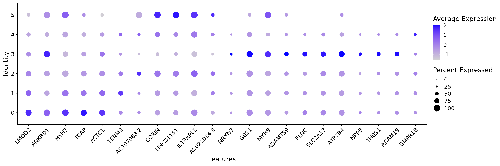
saveRDS(coembed.sub, "./Cardiomyocyte/coembed.cluster.rds")We can plot the snRNA-seq and snATAC-seq data separately
p <- DimPlot(coembed.sub, group.by = "RNA_snn_res.0.1", label = TRUE,
reduction = "umap_harmony", shuffle = TRUE, split.by = "tech",
cols = cols) +
xlab("UMAP1") + ylab("UMAP2")
p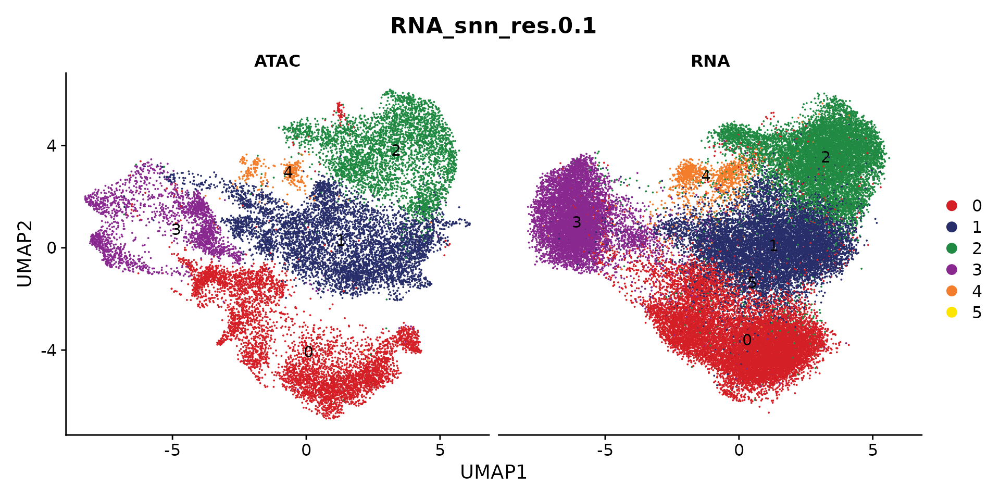
Visualize the cell proportion of each sub-population across all patients
p <- CellPropPlot(coembed.sub,
group.by = "RNA_snn_res.0.1",
prop.in = "patient_region_id",
cols = cols)
p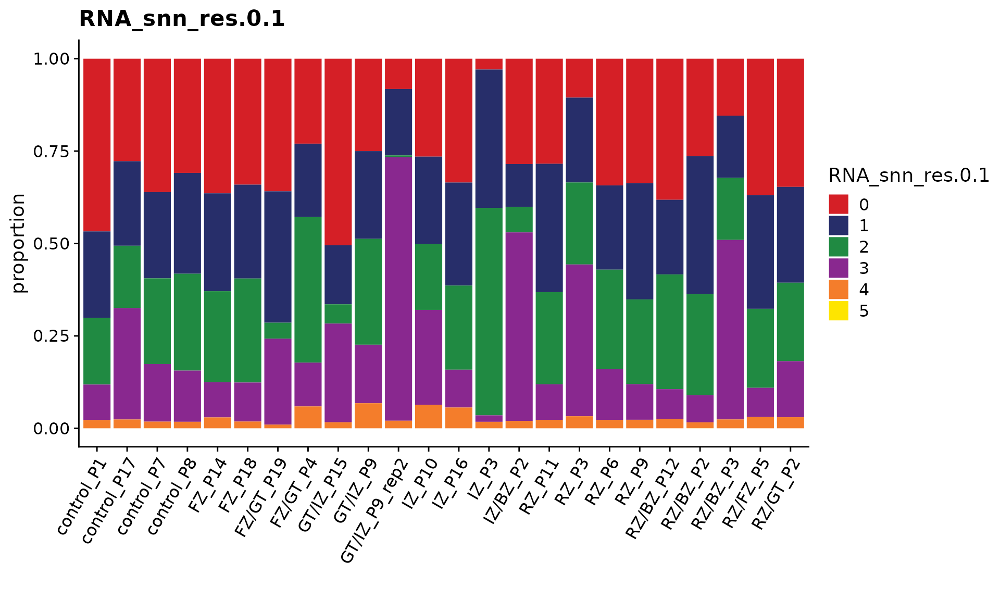
Since we have annotated all patients into three major groups, i.e., myogenic, ischmeic, and fibrotic. we can also perform statistical test to check if any sub-population are enriched in any of the above group. This can be done by the function CompareCellProp.
coembed.sub$patient_group <- factor(coembed.sub$patient_group,
levels = c("myogenic", "ischemic", "fibrotic"))
p <- CompareCellProp(object = coembed.sub,
group.by = "RNA_snn_res.0.1",
prop.in = "patient_region_id",
sample.annotation = "patient_group",
comparisons = list(c("myogenic", "ischemic"),
c("ischemic", "fibrotic"),
c("myogenic", "fibrotic")))
p## Warning: Computation failed in `stat_signif()`:
## not enough 'y' observations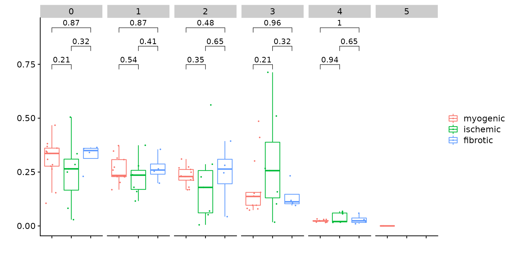
Save data
saveRDS(coembed.sub, "./Cardiomyocyte/coembed.sub.rds")Next, we will use the integrated snRNA-seq and snATAC-seq data to infer a gene regulatory network to characterize cardiomyocyte remodeling.
More specifically, we will:
- Identify the trajectory for myofibroblast differentiation
- Select the relevant TFs and genes for this process
- Infer and visualize the gene regulatory network
We first load the integrated data:
coembed.sub <- readRDS("./Cardiomyocyte/coembed.sub.rds")
cols <- ArchR::paletteDiscrete(coembed.sub@meta.data[, "RNA_snn_res.0.1"])
p <- DimPlot(coembed.sub, group.by = "RNA_snn_res.0.1", label = TRUE,
reduction = "umap_harmony", shuffle = TRUE, split.by = "tech",
cols = cols) +
xlab("UMAP1") + ylab("UMAP2")
pTrajectory analysis
Cell pairing
We can match the cells between these two modalities. In other words, for each cell in, for example, snATAC-seq, we will find a cell from snRNA-seq data so that these two cells have the similar profiles. This is only necessary when each modality was performed independently. If snRNA-seq and snATAC-seq data was generated by multi-modal protocol, e.g., 10X multiome or SHARE-seq, this step can be skipped.
We here use the optmatch method proposed by Kartha, Vinay K., et al. to match the cells.
df.pair <- PairCells(object = coembed.sub, reduction = "harmony",
pair.by = "tech", ident1 = "ATAC", ident2 = "RNA")## Getting dimensional reduction data for pairing cells...## Pairing cells using geodesic mode...## Constructing KNN graph for computing geodesic distance ..## Computing graph-based geodesic distance ..## # KNN subgraphs detected: 1## Skipping subgraphs with either ATAC/RNA cells fewer than: 50## Pairing cells for subgraph No.1## Total ATAC cells in subgraph: 17042## Total RNA cells in subgraph: 43746## Subgraph size: 17042## Search threshold being used: 6817## Constructing KNN based on geodesic distance to reduce search pairing search space## Number of cells being paired: 17042 ATAC and 17042 RNA cells## Determing pairs through optimized bipartite matching ..## Assembling pair list ..## Finished!We can visualize the paired cells
sel_cells <- c(df.pair$ATAC, df.pair$RNA)
coembed.sub2 <- coembed.sub[, sel_cells]
options(repr.plot.height = 5, repr.plot.width = 10)
DimPlot(coembed.sub2, reduction = "umap_harmony",
group.by = "RNA_snn_res.0.1", split.by = "tech", cols = cols)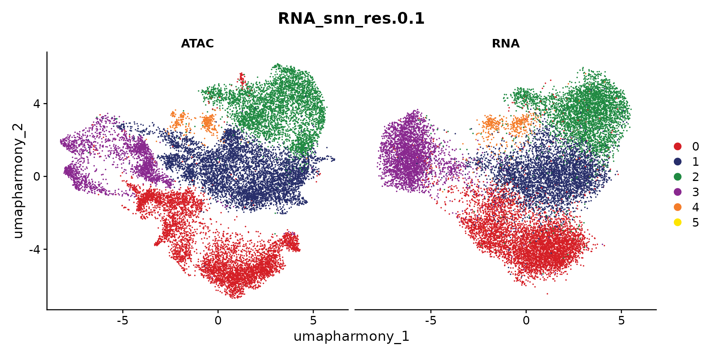
We next create a new Seurat object for those paired cells as if they are generated by single-cell multimodal protocol.
obj.pair <- CreatePairedObject(df.pair = df.pair,
object = coembed.sub2,
use.assay1 = "RNA",
use.assay2 = "ATAC")## Merging objects...
obj.pair## An object of class Seurat
## 211049 features across 17042 samples within 2 assays
## Active assay: RNA (28933 features, 0 variable features)
## 1 other assay present: ATAC
## 4 dimensional reductions calculated: pca, umap, harmony, umap_harmonyFinally, we infer a pseudo-time trajectory from SCARA5+ fibroblasts to myofibroblast using the approach from ArchR. Here we modified the function to allow to take a Seurat object as input
obj.pair <- AddTrajectory(object = obj.pair,
trajectory = c(2, 1, 0, 3),
group.by = "RNA_snn_res.0.1",
reduction = "umap_harmony",
dims = 1:2,
use.all = TRUE)
# we only plot the cells that are in this trajectory
obj <- obj.pair[, !is.na(obj.pair$Trajectory)]
p1 <- DimPlot(obj, reduction = "umap_harmony",
group.by = "RNA_snn_res.0.1", cols = cols) +
xlab("UMAP 1") + ylab("UMAP 2") +
ggtitle("Cluster")
p2 <- TrajectoryPlot(object = obj,
reduction = "umap_harmony",
continuousSet = "blueYellow",
size = 1,
addArrow = FALSE) +
xlab("UMAP 1") + ylab("UMAP 2") +
ggtitle("Trajectory")
p1 + p2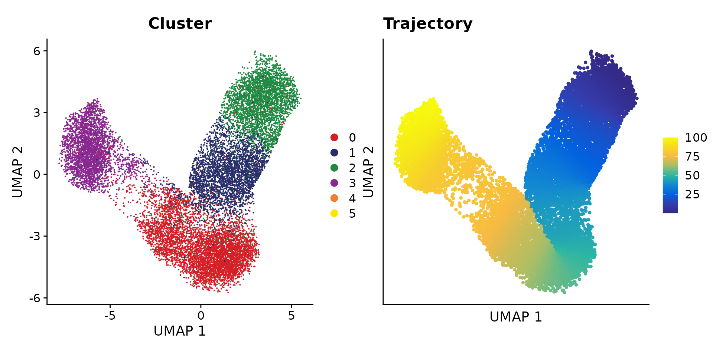
TF and gene selection
We next select candidate TFs and genes for building a meaningful gene regulatory network.
Select TFs
To identify potential regulator (i.e., TFs), we first estimate an acitivty score for each TF in each cell. This is done by first performing motif matching and then computing deviation scores using chromVAR.
# Get a list of motif position frequency matrices from the JASPAR database
pfm <- getMatrixSet(
x = JASPAR2020,
opts = list(collection = "CORE", tax_group = 'vertebrates', all_versions = FALSE)
)
# add motif information
obj <- AddMotifs(
object = obj,
genome = BSgenome.Hsapiens.UCSC.hg38,
pfm = pfm,
assay = "ATAC"
)## Building motif matrix## Finding motif positions## Creating Motif object
obj <- RunChromVAR(
object = obj,
genome = BSgenome.Hsapiens.UCSC.hg38,
assay = "ATAC"
)## Computing GC bias per region## Selecting background regions## Computing deviations from background## Constructing chromVAR assay
res <- SelectTFs(object = obj, return.heatmap = TRUE,
cor.cutoff = 0.1)## Find 456 shared features!
df.cor <- res$tfs
ht <- res$heatmapWe can visualize the TF activity dynamic along the trajectory
draw(ht)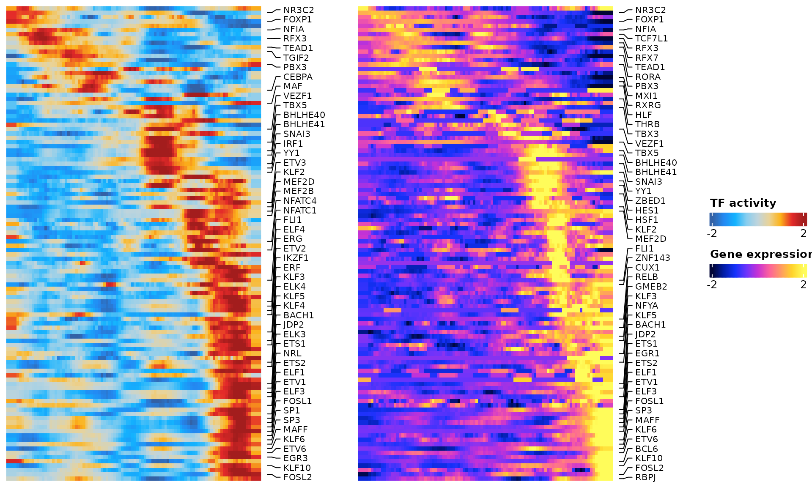
Select genes
We will select relevant genes by first linking genes to peaks based on the corrleation between gene expression from the snRNA-seq data and peak accessibility from the snATAC-seq data along the inferred trajectory. This means that we only consider a gene to be a potential target if it can be assocaited to at least one peak.
res <- SelectGenes(object = obj,
labelTop1 = 0,
labelTop2 = 0)## Creating Trajectory Group Matrix..## Smoothing...## Creating Trajectory Group Matrix..## Smoothing...## Linking cis-regulatory elements to genes...
df.p2g <- res$p2g
ht <- res$heatmap
draw(ht)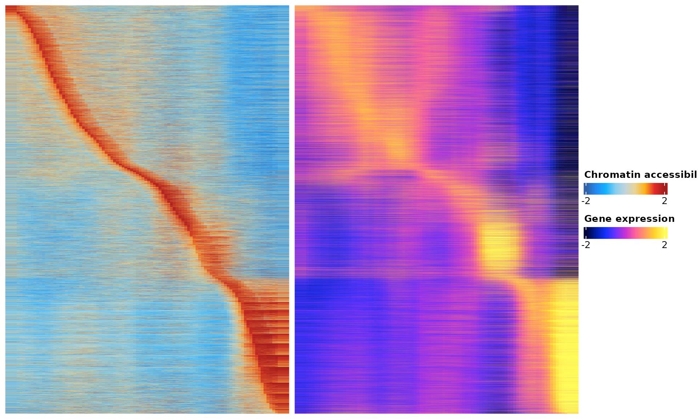
Gene regulatory network inference and visualization
We here will try to predict a gene regulatory network based on the correlation of the TF binding activity as estimated from snATAC-seq and gene expression as measured by snRNA-seq along the trajectory.
tf.gene.cor <- GetTFGeneCorrelation(object = obj,
tf.use = df.cor$tfs,
gene.use = unique(df.p2g$gene),
tf.assay = "chromvar",
gene.assay = "RNA",
trajectory.name = "Trajectory")## Creating Trajectory Group Matrix..## Some values are below 0, this could be the Motif activity matrix in which scaleTo should be set = NULL.
## Continuing without depth normalization!## Smoothing...## Creating Trajectory Group Matrix..## Smoothing...We can then visualize this correlation matrix by heatmap. Also, we can cluster the genes and TFs to identify different regulatory modules for the predefined sub-populations.
ht <- GRNHeatmap(tf.gene.cor,
tf.timepoint = df.cor$time_point)## `use_raster` is automatically set to TRUE for a matrix with more than
## 2000 rows. You can control `use_raster` argument by explicitly setting
## TRUE/FALSE to it.
##
## Set `ht_opt$message = FALSE` to turn off this message.
ht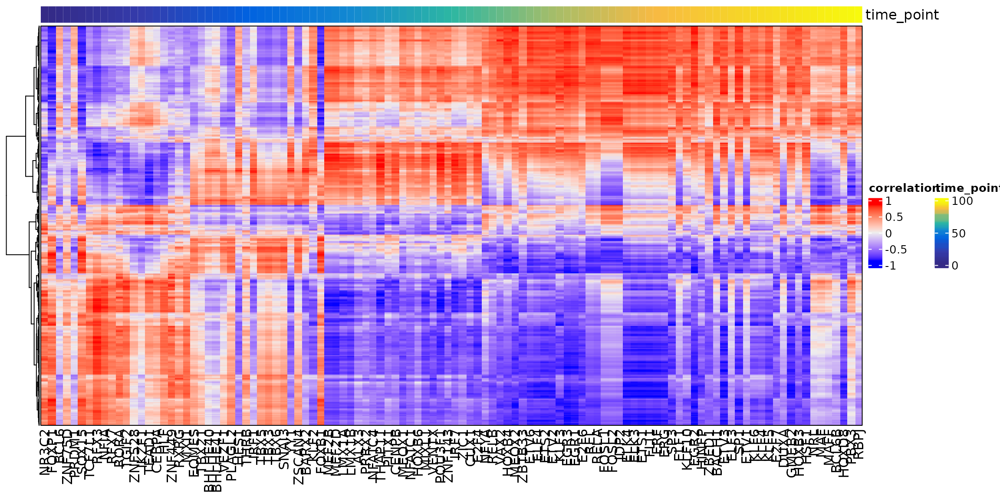
To associate genes to TFs, we will use the peak-to-gene links and TF binding sites information. Specifically, if a gene is regulated by a peak and this peak is bound by a TF, then we consider this gene to be a target of this TF.
motif.matching <- obj@assays$ATAC@motifs@data
colnames(motif.matching) <- obj@assays$ATAC@motifs@motif.names
motif.matching <-
motif.matching[unique(df.p2g$peak), unique(tf.gene.cor$tf)]
df.grn <- GetGRN(motif.matching = motif.matching,
df.cor = tf.gene.cor,
df.p2g = df.p2g)## Filtering network by peak-to-gene links...## Filtering network by TF binding site prediction...Finally, we can visualize our network as the last step of this analysis
# define colors for nodes representing TFs (i.e., regulators)
df.cor <- df.cor[order(df.cor$time_point), ]
tfs.timepoint <- df.cor$time_point
names(tfs.timepoint) <- df.cor$tfs
# plot the graph, here we can highlight some genes
df.grn2 <- df.grn %>%
subset(correlation > 0.5) %>%
select(c(tf, gene, correlation)) %>%
rename(weights = correlation)
p <- GRNPlot(df.grn2,
tfs.timepoint = tfs.timepoint,
show.tf.labels = TRUE,
seed = 42,
plot.importance = FALSE,
min.importance = 2,
remove.isolated = FALSE)
options(repr.plot.height = 20, repr.plot.width = 20)
print(p)## Warning: Using alpha for a discrete variable is not advised.
Save data
saveRDS(obj, "./Cardiomyocyte/coembed.trajectory.rds")
# Check session information
sessionInfo()## R version 4.1.1 (2021-08-10)
## Platform: x86_64-conda-linux-gnu (64-bit)
## Running under: Rocky Linux 8.6 (Green Obsidian)
##
## Matrix products: default
## BLAS/LAPACK: /home/rs619065/miniconda3/envs/r-4.1/lib/libopenblasp-r0.3.18.so
##
## locale:
## [1] LC_CTYPE=en_US.UTF-8 LC_NUMERIC=C
## [3] LC_TIME=en_US.UTF-8 LC_COLLATE=en_US.UTF-8
## [5] LC_MONETARY=en_US.UTF-8 LC_MESSAGES=en_US.UTF-8
## [7] LC_PAPER=en_US.UTF-8 LC_NAME=C
## [9] LC_ADDRESS=C LC_TELEPHONE=C
## [11] LC_MEASUREMENT=en_US.UTF-8 LC_IDENTIFICATION=C
##
## attached base packages:
## [1] stats4 grid stats graphics grDevices utils datasets
## [8] methods base
##
## other attached packages:
## [1] circlize_0.4.15 ComplexHeatmap_2.10.0
## [3] ggraph_2.0.6 igraph_1.3.4
## [5] TFBSTools_1.32.0 JASPAR2020_0.99.10
## [7] dplyr_1.0.9 BSgenome.Hsapiens.UCSC.hg38_1.4.4
## [9] BSgenome_1.62.0 rtracklayer_1.54.0
## [11] Biostrings_2.62.0 XVector_0.34.0
## [13] Nebulosa_1.4.0 patchwork_1.1.1
## [15] harmony_0.1.0 scMEGA_0.2.0
## [17] Signac_1.6.0 sp_1.5-0
## [19] SeuratObject_4.1.0 Seurat_4.1.1
## [21] rhdf5_2.38.1 SummarizedExperiment_1.24.0
## [23] Biobase_2.54.0 MatrixGenerics_1.6.0
## [25] Rcpp_1.0.9 Matrix_1.4-1
## [27] GenomicRanges_1.46.1 GenomeInfoDb_1.30.1
## [29] IRanges_2.28.0 S4Vectors_0.32.4
## [31] BiocGenerics_0.40.0 matrixStats_0.62.0
## [33] data.table_1.14.2 stringr_1.4.0
## [35] plyr_1.8.7 magrittr_2.0.3
## [37] ggplot2_3.3.6 gtable_0.3.0
## [39] gtools_3.9.3 gridExtra_2.3
## [41] ArchR_1.0.2
##
## loaded via a namespace (and not attached):
## [1] vcd_1.4-9 ica_1.0-3
## [3] RcppRoll_0.3.0 class_7.3-20
## [5] Rsamtools_2.10.0 foreach_1.5.2
## [7] lmtest_0.9-40 rprojroot_2.0.3
## [9] crayon_1.5.1 laeken_0.5.2
## [11] spatstat.core_2.4-4 MASS_7.3-57
## [13] rhdf5filters_1.6.0 nlme_3.1-157
## [15] backports_1.4.1 qlcMatrix_0.9.7
## [17] rlang_1.0.4 ROCR_1.0-11
## [19] irlba_2.3.5 limma_3.50.3
## [21] smoother_1.1 BiocParallel_1.28.3
## [23] rjson_0.2.21 CNEr_1.30.0
## [25] bit64_4.0.5 glue_1.6.2
## [27] poweRlaw_0.70.6 sctransform_0.3.3
## [29] parallel_4.1.1 chromVAR_1.16.0
## [31] spatstat.sparse_2.1-1 AnnotationDbi_1.56.2
## [33] spatstat.geom_2.4-0 tidyselect_1.1.2
## [35] textshape_1.7.3 fitdistrplus_1.1-8
## [37] XML_3.99-0.9 tidyr_1.2.0
## [39] zoo_1.8-10 ggpubr_0.4.0
## [41] GenomicAlignments_1.30.0 xtable_1.8-4
## [43] RcppHNSW_0.3.0 evaluate_0.16
## [45] cli_3.3.0 zlibbioc_1.40.0
## [47] miniUI_0.1.1.1 bslib_0.4.0
## [49] rpart_4.1.16 fastmatch_1.1-3
## [51] RcppEigen_0.3.3.9.2 shiny_1.7.2
## [53] xfun_0.32 clue_0.3-60
## [55] cluster_2.1.3 caTools_1.18.2
## [57] tidygraph_1.2.1 pcaMethods_1.86.0
## [59] KEGGREST_1.34.0 tibble_3.1.8
## [61] ggrepel_0.9.1 listenv_0.8.0
## [63] TFMPvalue_0.0.8 png_0.1-7
## [65] future_1.27.0 withr_2.5.0
## [67] lsa_0.73.3 bitops_1.0-7
## [69] slam_0.1-50 ggforce_0.3.3
## [71] ranger_0.13.1 sparsesvd_0.2
## [73] e1071_1.7-9 pracma_2.3.8
## [75] pillar_1.8.0 GlobalOptions_0.1.2
## [77] cachem_1.0.6 fs_1.5.2
## [79] scatterplot3d_0.3-41 TTR_0.24.3
## [81] GetoptLong_1.0.5 xts_0.12.1
## [83] vctrs_0.4.1 ellipsis_0.3.2
## [85] generics_0.1.3 tools_4.1.1
## [87] munsell_0.5.0 tweenr_1.0.2
## [89] proxy_0.4-26 DelayedArray_0.20.0
## [91] fastmap_1.1.0 compiler_4.1.1
## [93] abind_1.4-5 httpuv_1.6.5
## [95] plotly_4.10.0 rgeos_0.5-9
## [97] GenomeInfoDbData_1.2.7 lattice_0.20-45
## [99] deldir_1.0-6 utf8_1.2.2
## [101] later_1.3.0 jsonlite_1.8.0
## [103] ggplot.multistats_1.0.0 scales_1.2.0
## [105] docopt_0.7.1 pbapply_1.5-0
## [107] carData_3.0-5 lazyeval_0.2.2
## [109] nabor_0.5.0 promises_1.2.0.1
## [111] doParallel_1.0.17 car_3.1-0
## [113] R.utils_2.11.0 goftest_1.2-3
## [115] spatstat.utils_2.3-1 reticulate_1.25
## [117] rmarkdown_2.14 pkgdown_2.0.3
## [119] rlemon_0.2.0 cowplot_1.1.1
## [121] textshaping_0.3.6 Rtsne_0.16
## [123] uwot_0.1.11 survival_3.3-1
## [125] yaml_2.3.5 systemfonts_1.0.4
## [127] htmltools_0.5.3 memoise_2.0.1
## [129] BiocIO_1.4.0 graphlayouts_0.8.1
## [131] destiny_3.9.1 viridisLite_0.4.0
## [133] digest_0.6.29 assertthat_0.2.1
## [135] mime_0.12 RSQLite_2.2.14
## [137] future.apply_1.9.0 blob_1.2.3
## [139] R.oo_1.24.0 ragg_1.2.2
## [141] splines_4.1.1 labeling_0.4.2
## [143] Rhdf5lib_1.16.0 RCurl_1.98-1.6
## [145] broom_1.0.0 ks_1.13.5
## [147] hms_1.1.1 colorspace_2.0-3
## [149] shape_1.4.6 nnet_7.3-17
## [151] sass_0.4.2 mclust_5.4.10
## [153] RANN_2.6.1 mvtnorm_1.1-3
## [155] ggseqlogo_0.1 fansi_1.0.3
## [157] tzdb_0.3.0 VIM_6.1.1
## [159] parallelly_1.32.1 SnowballC_0.7.0
## [161] R6_2.5.1 factoextra_1.0.7
## [163] ggridges_0.5.3 lifecycle_1.0.1
## [165] curl_4.3.2 ggsignif_0.6.3
## [167] leiden_0.4.2 motifmatchr_1.16.0
## [169] jquerylib_0.1.4 robustbase_0.95-0
## [171] desc_1.4.1 RcppAnnoy_0.0.19
## [173] RColorBrewer_1.1-3 iterators_1.0.14
## [175] htmlwidgets_1.5.4 polyclip_1.10-0
## [177] purrr_0.3.4 seqLogo_1.60.0
## [179] mgcv_1.8-40 globals_0.16.0
## [181] spatstat.random_2.2-0 progressr_0.10.1
## [183] codetools_0.2-18 GO.db_3.14.0
## [185] SingleCellExperiment_1.16.0 RSpectra_0.16-1
## [187] R.methodsS3_1.8.1 DBI_1.1.2
## [189] tensor_1.5 httr_1.4.3
## [191] highr_0.9 KernSmooth_2.23-20
## [193] stringi_1.7.8 reshape2_1.4.4
## [195] farver_2.1.1 annotate_1.72.0
## [197] viridis_0.6.2 ggthemes_4.2.4
## [199] hexbin_1.28.2 optmatch_0.10.4
## [201] magick_2.7.3 DT_0.24
## [203] boot_1.3-28 restfulr_0.0.13
## [205] readr_2.1.2 scattermore_0.8
## [207] DEoptimR_1.0-11 bit_4.0.4
## [209] spatstat.data_2.2-0 pkgconfig_2.0.3
## [211] DirichletMultinomial_1.36.0 rstatix_0.7.0
## [213] knitr_1.39